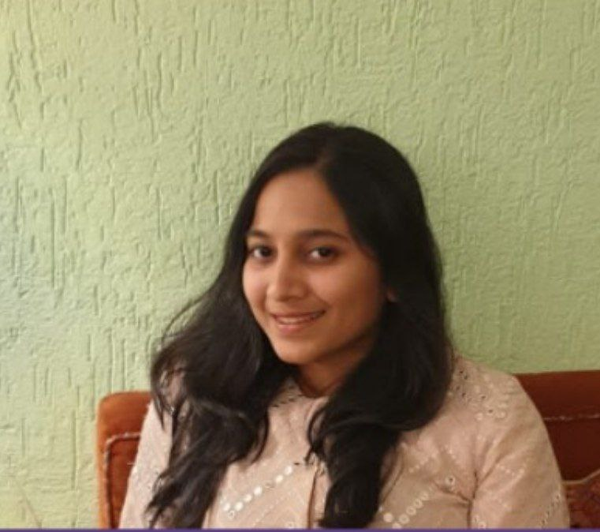

Khyati sharda

Summary
I am a tech enthusiast with a passion for problem-solving and optimization. My career objective is to become a skilled and
knowledgeable tech professional, contributing to the industry with innovative and impactful solutions.
Well-versed in C, C++, HTML, and CSS. currently learning web development and Data structure and algorithms(DSA). I possess
decent analytical and problem-solving skills.
Consistent practice of Yoga and Meditation for the last 5 years has helped me upgrade my overall health and personality. It has
helped me improve my concentration, awareness, and problem-solving abilities.
Volunteered actively in various YES!+ (youth empowerment and skills) programs, The Art of Living, at my college and in the home
city, which has helped me unleash my leadership qualities and teamwork.
I am excited to explore new technologies, expand my skillset, and collaborate with teams to tackle complex challenges. Bringing
forth my dedication, innate desire to learn, strong work ethic, and commitment to excellence.
Academic performance
- B.Tech. in Civil Engineering, MNIT Jaipur (May 2021 to present); CGPA: 7.19/10
- 12th; Shivam convent, Patna (May 2018- Mar 2020); Percentage: 91.60/100
- 10th; Notre Dame Academy Patna (May 2008- Mar 2018); Percentage: 89.70/100
Skills
- C
- C++
- HTML
- CSS
- Git
- Computer Networking
- AutoCAD
Awards and Certifications
Completed Microeconomics course by University of Illinois
View certificate
Extracurricular activities
- Successfully completed Yes! + (youth empowerment and skills) workshop from Vyatka Vikash Kendra, The Art of Living(course aimed at the improvement of soft skills such as concentration, confidence, etc), and practising the meditation techniques taught in this course everyday for last five years.
- Participated in some other courses of The Art of Living organisation such as Advance Meditation Program, Sahaj Samadhi Dhyana to improve my mental abilities.
- As an active volunteer of The Art of Living organisation, I played a key role in organising several Yes!+ courses at my college and at my home city.
- Part of Travel and Heritage club of MNIT.
Achievements
Got bronze medal in throwball competition in 10th grade, at Notre Dame Academy
Strengths
- Patience,calm minded
- Optimistic
- Good communication skils
- Confident in public speaking
Hobbies/Interests
- Gaining spiritual knowledge
- Reading books
- Participating in social activities
- Chess
Contact me
{kind=link}